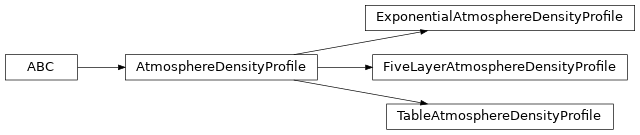

Atmosphere Models (atmosphere)¶
Models of the atmosphere useful for transforming between column densities (atmosphere depths \(X\), in units of mass per area) and heights (in distance above sea-level units).
Reference/API¶
ctapipe.atmosphere Module¶
Atmosphere density models and functions to transform between column density (X in grammage units) and height (meters) units.
Zenith angle is taken into account in the line-of-sight integral to compute the column density X assuming Earth as a flat plane (the curvature is not taken into account)
Classes¶
Base class for models of atmosphere density. |
|
A simple functional density profile modeled as an exponential. |
|
Tabular profile from a table that has both the density and it’s integral pre-computed. |
|
CORSIKA 5-layer atmosphere model |
Class Inheritance Diagram¶
